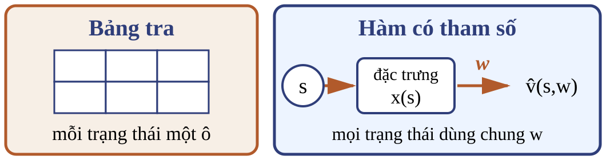
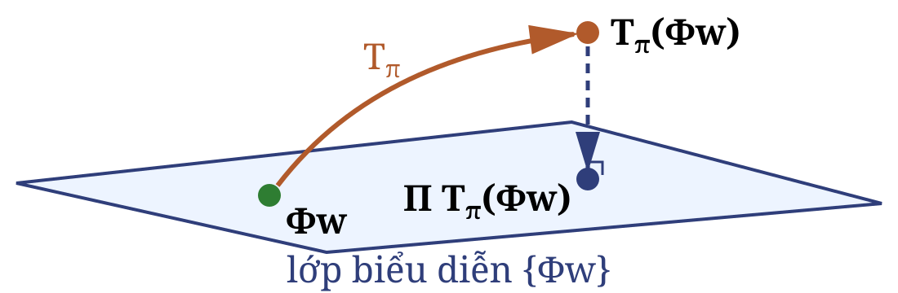
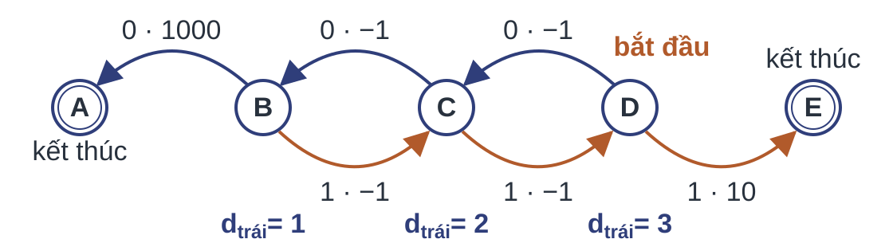
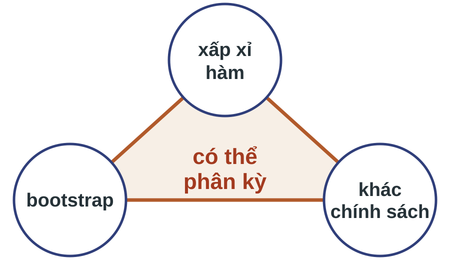

Bài 05–06. Một giá trị riêng cho mỗi trạng thái hoặc cặp. Hội tụ cần thăm mọi trạng thái (hoặc cặp) vô hạn lần, bước học Robbins–Monro; GLIE với điều khiển Monte Carlo và Sarsa.
Bài này. $\hat v(s,w)$, $\hat q(s,a,w)$ dùng chung tham số $w$. Một cập nhật đổi ước lượng ở nhiều trạng thái, nên lập luận hội tụ theo từng ô không còn áp dụng trực tiếp.
Ba điểm đối chiếu Monte Carlo, TD, Sarsa và Q-learning trong bài:
mục tiêu cập nhật: lợi tức đầy đủ hay bootstrap (chứa ước lượng hiện tại);
học theo chính sách hay khác chính sách;
cách cải thiện chính sách.
Nội dung và mục tiêu
Hàm xấp xỉ và đặc trưng
Monte Carlo với hàm xấp xỉ
TD(0) và Bellman chiếu
Điều khiển và Sarsa
Q-learning và bộ ba bất ổn
Bài tập
Mục tiêu học tập
Viết $\hat v$, $\hat q$ tuyến tính, nêu miền và kích thước.
Tính cập nhật Monte Carlo, TD(0), Sarsa trên ví dụ.
Phân biệt gradient đầy đủ (Monte Carlo) với bán gradient (TD).
Nêu điểm cố định Bellman chiếu và giả thiết.
Phân biệt mục tiêu Sarsa và Q-learning; nhận diện bộ ba bất ổn (deadly triad).
Giới hạn của bảng tra
Bảng lưu $V(s)\approx v_\pi(s)$ hoặc $Q(s,a)\approx q_\pi(s,a)$ cho từng trạng thái hoặc cặp trạng thái–hành động. Cách này dễ phân tích nhưng khó mở rộng.
Không gian trạng thái hoặc hành động lớn hay liên tục: không lưu được một ô cho mỗi phần tử.
Không tổng quát hóa: hai trạng thái có tính chất giống nhau vẫn có hai ô độc lập.
Với mọi cách biểu diễn, dữ liệu không độc lập cùng phân phối (iid) và không dừng: mẫu trong lượt phụ thuộc nhau, phân phối trạng thái đổi theo chính sách.
Câu hỏi: cập nhật ô của trạng thái $s$ làm thay đổi gì ở ô của một trạng thái gần $s$?
Không thay đổi; mỗi ô được cập nhật độc lập.
Hàm giá trị có tham số
Thay bảng bằng $\hat v(s,w)\approx v_\pi(s)$ hoặc $\hat q(s,a,w)\approx q_\pi(s,a)$, với vector tham số $w\in\mathbb R^d$ dùng chung cho mọi trạng thái.

Chia sẻ thông tin giữa các trạng thái.
Quyết định nhanh; hỗ trợ không gian trạng thái liên tục hoặc nhiều chiều.
Vì $w$ dùng chung, một cập nhật có thể làm thay đổi dự đoán ở nhiều trạng thái.
Tổng quát hóa qua tham số dùng chung
Dự đoán $\hat v(s,w)=x(s)^Tw$ là tổ hợp tuyến tính các thành phần của $x(s)$ với hệ số $w$. Với sai lệch $e$ = mục tiêu cập nhật − $\hat v(s,w)$, cộng vào $w$ lượng $\Delta w=\alpha e\,x(s)$.
Cho $x(s)=(1;1)^T$, $x(s')=(1;0{,}5)^T$, $w=(0;0)^T$, $e=2$, $\alpha=0{,}1$.
Nếu $v_\pi(s_1)\ne v_\pi(s_2)$, không có $w$ nào cho đúng cả hai giá trị. Ví dụ: chỉ dùng đặc trưng hằng $x(s)=1$ thì mọi trạng thái cùng dự đoán $w$.
Tổng quát hơn, mọi dự đoán nằm trong lớp $\{\Phi w: w\in\mathbb R^d\}$, với $\Phi$ có hàng $x(s)^T$ ($\mathcal S$ hữu hạn); sai số xấp xỉ là khoảng cách (theo trọng số $\mu$ của $J_\mu$) từ $v_\pi$ tới lớp này.
Câu hỏi: thêm dữ liệu, giữ nguyên đặc trưng, có loại bỏ được sai số xấp xỉ không?
Không: đây là giới hạn của lớp hàm, khác sai số ước lượng vốn giảm khi thêm mẫu.
Mục tiêu mẫu thay cho giá trị thật
$J_\mu$ cần $v_\pi$, nhưng $v_\pi$ chưa biết. Với trạng thái mẫu $S_t$, thay $v_\pi(S_t)$ bằng mục tiêu cập nhật $y_t$ tính từ mẫu (nguồn tr. 27, 32):
$G_t$ không phụ thuộc $w$, nên đây là gradient đầy đủ của mất mát mẫu; với $w$ cố định và $S_t\sim\mu$, trung bình của bước là hướng giảm của $J_\mu$. Mỗi bước dùng một mẫu: hạ gradient ngẫu nhiên (SGD).
Thuật toán Monte Carlo tuyến tính
Đầu vào: $\pi$ cố định, $x$, $\gamma$, $w_0$, số lượt $K$, bước học $\alpha_n$ ($n$: số lần cập nhật). Đầu ra: $w$.
Khởi tạo $w\leftarrow w_0$, $n\leftarrow1$. Lặp lại $K$ lượt các bước 2–4.
Sinh một lượt $S_0,R_1,S_1,\dots,S_T$ theo $\pi$ tới khi kết thúc.
Tính lùi lợi tức: $G_T=0$, $G_t=R_{t+1}+\gamma G_{t+1}$.
Với $t=0,\dots,T-1$ (mọi lần ghé): $e_t\leftarrow G_t-x(S_t)^Tw$;$w\leftarrow w+\alpha_n e_t\,x(S_t)$; $n\leftarrow n+1$.
Câu hỏi: với $\Delta w=(0{,}8;0{,}4)^T$ của ví dụ cập nhật Monte Carlo, dự đoán tại đặc trưng $(1;0)^T$ đổi bao nhiêu?
Tăng $x^T\Delta w=1\cdot0{,}8+0\cdot0{,}4=0{,}8$.
Điều kiện hội tụ của Monte Carlo tuyến tính
Nếu dữ liệu độc lập cùng phân phối (iid), đặc trưng bị chặn và bước học thỏa điều kiện Robbins–Monro $\sum_n\alpha_n=\infty$,$\sum_n\alpha_n^2<\infty$, thì SGD hội tụ tới cực tiểu của sai số bình phương trên phân phối dữ liệu (nguồn tr. 34).
Với $S_t\sim\mu$, cực tiểu này trùng cực tiểu của $J_\mu$ vì
Giả thiết: $\pi$, $\mu$, đặc trưng cố định; $\mathbb E[G_t^2]<\infty$; mất mát lồi theo $w$ là hệ quả của mô hình tuyến tính. Mẫu trong cùng lượt tương quan; khi đó cần phiên bản định lý cho chuỗi Markov. Dự đoán hội tụ tới điểm cực tiểu $J_\mu$ trong lớp tuyến tính; điểm này bằng $v_\pi$ chỉ khi lớp hàm chứa $v_\pi$.
Mục tiêu TD(0) với hàm xấp xỉ
Monte Carlo phải chờ hết lượt để có $G_t=R_{t+1}+\gamma G_{t+1}$. Như TD(0) dạng bảng ở Bài 05, TD(0) thay phần còn lại $G_{t+1}$ bằng dự đoán hiện tại:
Dự đoán mới tại $S_t$ là $0{,}44+1{,}76=2{,}2$, giảm về phía mục tiêu $1{,}9$. Mục tiêu cũng đổi: $\hat v(S_{t+1},w_{t+1})=0{,}88$ nên mục tiêu mới là $1{,}792$.
Bán gradient TD(0) tuyến tính
Mục tiêu TD chứa $w$. Với $\delta_t(w)=R_{t+1}+\gamma x(S_{t+1})^Tw-x(S_t)^Tw$, gradient đầy đủ của $\tfrac12\delta_t(w)^2$ là
Nếu $S'$ kết thúc, lấy trạng thái đầu mới cho $S$; ngược lại $S\leftarrow S'$.
Mỗi bước dùng một chuyển tiếp, không cần chờ hết lượt; $y$ và $\delta$ tính bằng cùng $w$ trước khi cập nhật.
Ảnh Bellman và phép chiếu
Để biết TD(0) dừng ở đâu, xét $\mathcal S$ hữu hạn: $\Phi$ có hàng $x(s)^T$, mọi dự đoán thuộc lớp $\{\Phi w\}$, và toán tử Bellman $T_\pi v=r_\pi+\gamma P_\pi v$ có điểm cố định $v_\pi$ ($r_\pi$: phần thưởng kỳ vọng một bước; $P_\pi$: ma trận chuyển dưới $\pi$, Bài 04).

Trung bình mục tiêu TD là $T_\pi(\Phi w)$, nói chung nằm ngoài lớp; gần nó nhất trong lớp là hình chiếu $\Pi T_\pi(\Phi w)$. Trang sau cho thấy TD dừng tại $w$ thỏa $\Phi w=\Pi T_\pi(\Phi w)$.
Ví dụ: lớp $\{c(1;1)^T\}$ và $T_\pi(\Phi w)=(2;0)^T$ cho hình chiếu trực giao $(1;1)^T$.
Hướng cập nhật trung bình của TD
Lấy $S_t$ theo phân phối dừng $d_\pi$ (giả sử tồn tại; tần suất dài hạn của trạng thái khi chạy $\pi$, tức $\mu=d_\pi$), giữ $w$ cố định, đặt $D=\operatorname{diag}(d_\pi)$ và dùng kỳ vọng một bước của trang trước:
TD dừng về trung bình khi $b-Aw=0$, tức phần dư Bellman $T_\pi(\Phi w)-\Phi w$ trực giao với mọi cột của $\Phi$ theo tích vô hướng $\langle u,v\rangle_D=u^TDv$.
Điểm cố định Bellman chiếu
Phép chiếu theo $D$ đưa $v$ tới điểm gần nhất trong lớp $\{\Phi w\}$ theo chuẩn $\|v\|_D=\sqrt{v^TDv}$; khi $\Phi^TD\Phi$ khả nghịch,
$$\Pi_D=\Phi(\Phi^TD\Phi)^{-1}\Phi^TD.$$
Hình chiếu là điểm có phần dư trực giao với các cột của $\Phi$ theo $D$, nên điều kiện dừng ở trang trước tương đương với
TD hướng tới điểm cố định của $\Pi_DT_\pi$; Monte Carlo với $\mu=d_\pi$ hướng tới hình chiếu $\Pi_Dv_\pi$ của giá trị thật. Hai điểm nói chung khác nhau, gần với ý lệch mục tiêu ở nguồn tr. 43.
Điều kiện hội tụ của TD tuyến tính
$Aw=b$ chỉ mô tả điểm dừng về trung bình. Để dãy cập nhật ngẫu nhiên hội tụ, kết quả cổ điển (Tsitsiklis và Van Roy, 1997) cần:
Dữ liệu: $\pi$ cố định, lấy mẫu theo chính sách; chuỗi ergodic, phân phối dừng duy nhất, $d_\pi(s)>0$ mọi $s$.
Hệ cập nhật: $\gamma<1$; đặc trưng bị chặn; $\Phi$ đủ hạng cột; bước học Robbins–Monro.
Khi đó $u^TAu\ge(1-\gamma)\|\Phi u\|_D^2>0$ với mọi $u\ne0$, nên hệ trung bình $\dot w=b-Aw$ ổn định và $w_t\to w_{\mathrm{TD}}$ với xác suất 1.
Câu hỏi: kết luận hội tụ nhắm đến đối tượng nào?
Tham số $w_{\mathrm{TD}}$ (nghiệm $Aw=b$); $\Phi w_{\mathrm{TD}}$ là điểm cố định Bellman chiếu, nói chung khác $v_\pi$ và $\Pi_Dv_\pi$.
So sánh Monte Carlo và TD(0)
Monte Carlo
TD(0)
Mục tiêu
$G_t$
$R_{t+1}+\gamma\hat v(S_{t+1},w)$
Thời điểm cập nhật
cuối lượt
sau mỗi chuyển tiếp
Kỳ vọng mục tiêu
bằng $v_\pi(S_t)$
nói chung lệch khi $\hat v$ sai
Phương sai mục tiêu
thường cao hơn
thường thấp hơn
Loại cập nhật
gradient đầy đủ
bán gradient
Nghiệm tuyến tính
điểm cực tiểu $J_\mu$ ($\Pi_Dv_\pi$ khi $\mu=d_\pi$)
điểm cố định Bellman chiếu
Câu hỏi: cùng đặc trưng, hai phương pháp hội tụ tới cùng dự đoán không?
Nói chung không: với $\mu=d_\pi$, $\Pi_Dv_\pi$ khác điểm cố định của $\Pi_DT_\pi$.
Giá trị hành động cho điều khiển
Phần dự đoán giữ $\pi$ cố định. Điều khiển chọn hành động không cần mô hình nhờ giá trị hành động (Bài 06, nguồn tr. 38): $\hat q(s,a,w)$ xấp xỉ $q_\pi$ của chính sách đang chạy (Sarsa) hoặc $q_*$ (Q-learning); chính sách tham lam là $\pi_w(s)\in\arg\max_{a}\hat q(s,a,w)$.
Theo/khác chính sách: chính sách hành vi (thường $\varepsilon$-tham lam theo $\hat q$) sinh dữ liệu; chính sách đích xác định giá trị cần học.
Cải thiện chính sách: chính sách đổi khi $w$ đổi.
Chính sách đổi trong lúc học, và với TD (Sarsa, Q-learning) mục tiêu còn bootstrap, nên mục tiêu thay đổi liên tục và dữ liệu không đến từ một phân phối cố định (nguồn tr. 39).
Chuỗi năm trạng thái với đặc trưng tuyến tính
Chuỗi của Bài 06: D bắt đầu, A và E kết thúc, $\gamma=1$, lượt tối đa ba bước (nguồn tr. 40).

Nhãn cạnh: hành động · phần thưởng; chuyển tất định.
Đặc trưng: $x(s,a)=\bigl(d_{\text{trái}}(s);\,u(a);\,1\bigr)^T$ với $u(0)=1$, $u(1)=-1$, và $\hat q(s,a,w)=x(s,a)^Tw$.
$\hat q(s,1,w)-\hat q(s,0,w)=-2[w]_2$ ở mọi $s$ ($[w]_2$: hệ số của $u(a)$), nên hành động tham lam như nhau ở B, C, D.
Mục tiêu Sarsa với hàm xấp xỉ
Như Sarsa dạng bảng ở Bài 06, thay $Q(S_{t+1},A_{t+1})$ bằng $\hat q(S_{t+1},A_{t+1},w_t)$. Hành động được chọn theo chính sách $\varepsilon$-tham lam hiện hành theo $\hat q(\cdot,\cdot,w_t)$, phá hòa cố định:
$A_{t+1}$ là hành động chính sách hiện hành thực sự chọn, kể cả khi thăm dò (học theo chính sách). Nếu $S_{t+1}$ là trạng thái kết thúc thì giá trị tiếp nối bằng 0.
Câu hỏi: có thay $A_{t+1}$ bằng hành động tham lam trong mục tiêu không?
Không; khi đó mục tiêu thành mục tiêu Q-learning ở phần sau.
SARSA với xấp xỉ hàm
Đầu vào: $\hat q$, $\varepsilon$, quy tắc phá hòa, $\gamma$, $\alpha_n$, ngân sách lượt. Đầu ra: $w$ và chính sách hiện hành.
Khởi tạo $w$. Mỗi lượt: 1. Khởi tạo $S$; chọn $A$ theo $\varepsilon$-greedy của $\hat q(\cdot,\cdot,w)$. 2. Thực hiện $A$, nhận $R,S'$. Nếu kết thúc: $y\leftarrow R$. 3. Nếu chưa kết thúc: chọn $A'$ theo $\varepsilon$-greedy hiện hành; $y\leftarrow R+\gamma\hat q(S',A',w)$. 4. $w\leftarrow w+\alpha_n[y-\hat q(S,A,w)]\nabla_w\hat q(S,A,w)$. 5. Nếu chưa kết thúc, gán $S\leftarrow S',A\leftarrow A'$.
Không suy hội tụ tổng quát của SARSA control từ bảo đảm TD dự đoán.
Một bước SARSA trên chuỗi
Với $\gamma=1$, $w_0=(1,1,-1)^T$, $\alpha=0{,}2$, mẫu $(D,0,-1,C,0)$:
Cập nhật $w$ theo sai số $Y_t^Q-\hat q(S_t,A_t,w_t)$ và gradient tại $(S_t,A_t)$.
Câu hỏi: trên mẫu ở trang trước, đích Q-learning có khác đích SARSA không?
Trên mẫu này, không: với $w_0$, $\hat q(C,0)=2>\hat q(C,1)=0$, nên hành động $0$ vừa được lấy vừa đạt cực đại. Quy tắc vẫn khác: SARSA dùng hành động do chính sách hành vi sinh; Q-learning dùng cực đại và học chính sách tham lam.
Bộ ba bất ổn (deadly triad)

Trong học giá trị TD có bootstrap và xấp xỉ hàm, lấy mẫu khác chính sách có thể tạo phân kỳ ở một số thuật toán.
Chẩn đoán theo ba câu kiểm tra
Biểu diễn
Một cập nhật có đổi nhiều dự đoán qua tham số chung không?
Đích
Đích có dùng dự đoán đang học không?
Phân phối
Chính sách sinh dữ liệu có khác chính sách đích không?
Câu hỏi: quy tắc Q-learning tuyến tính ở trang trước có đủ ba thành phần không?
Có. Đây là tín hiệu cần phân tích ổn định riêng, không phải kết luận rằng lần chạy sẽ phân kỳ.
Phạm vi của lý thuyết trong bài
Thiết lập
Kết luận được dùng
MC tuyến tính, $\pi$ và $\mu$ cố định
SGD trên mục tiêu bình phương lồi, dưới điều kiện lấy mẫu và bước học.
TD tuyến tính, theo $\pi$, chuỗi dừng $d_\pi$
Hướng đến điểm cố định Bellman chiếu, dưới các giả thiết đã nêu.
Điều khiển hoặc khác chính sách
Không suy hội tụ từ hai kết quả trên.
Xấp xỉ phi tuyến
Cần phân tích riêng cho thuật toán và kiến trúc.
Kiểm tra mạch suy luận
Chọn miền và đặc trưng; ghi kích thước của $x$ và $w$.
Xác định đích có phụ thuộc $w$ hay không.
Viết cập nhật và đại lượng được giữ cố định khi lấy đạo hàm.
Xác định chính sách sinh dữ liệu và chính sách được đánh giá.
Chỉ nêu hội tụ khi các giả thiết lấy mẫu, hạng và bước học khớp.
Câu hỏi: TD tuyến tính theo chính sách hội tụ đến đối tượng nào trong không gian đặc trưng?
Điểm cố định của toán tử Bellman sau phép chiếu theo $D$.
Từ đặc trưng tuyến tính đến học sâu
Đã xây dựng
Đặc trưng, gradient MC, bán gradient TD, Bellman chiếu và hai quy tắc đích điều khiển.
Bước tiếp theo
Thay tích vô hướng bằng mạng nơ-ron và khảo sát các cơ chế của Deep Q-Network.
Bảo đảm của mô hình tuyến tính không tự chuyển sang mạng nơ-ron; mỗi cơ chế cần phân tích riêng.